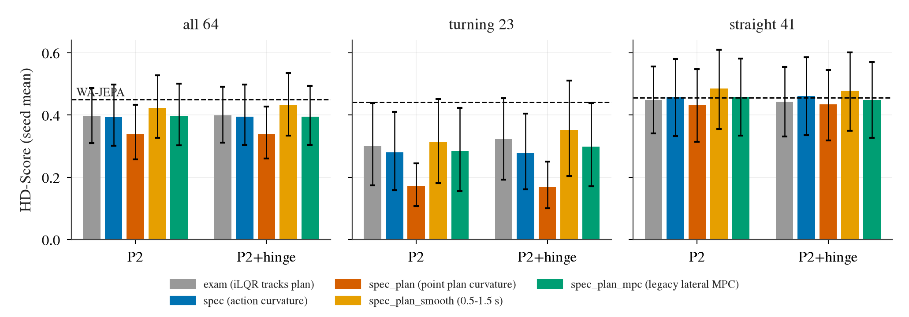
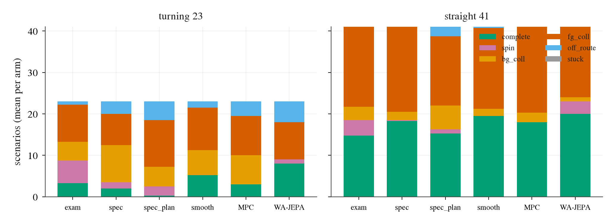
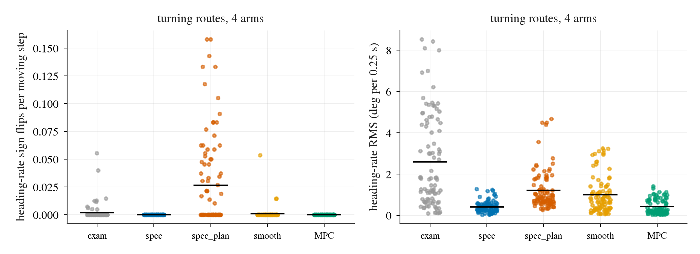
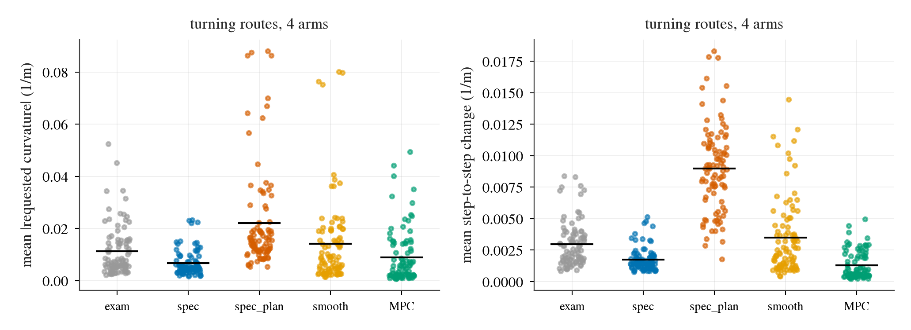
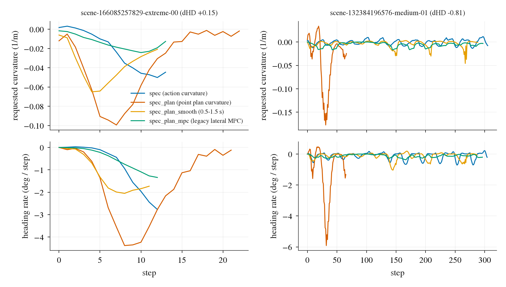
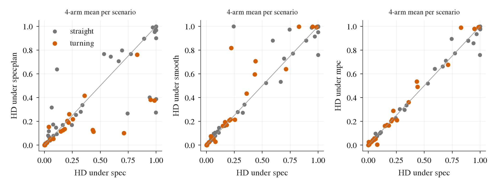

新预设 spec_plan：横向指令曲率 = 2ψ(t)/(v·t) − 偏航率(0)/v，t = 0.275 秒，ψ 与偏航率取自模型 plan 输出的偏航通道。之后仍经过 clip_curvature、0.25 秒横向延迟，纵向仍由 iLQR 跟随 plan 的速度。对照是同一批臂已有的 spec 与 exam 结果，没有重跑。转弯路线指记录路线的航向变化范围不小于 30°，共 23 条；其余 41 条为直路线。

| 每臂平均场景数 | 完成 | 打转 | 背景碰撞 | 前景碰撞 | 偏离路线 |
|---|---|---|---|---|---|
| 转弯 exam | 3.25 | 5.5 | 4.5 | 9.0 | 0.75 |
| 转弯 spec | 2.0 | 1.5 | 9.0 | 7.5 | 3.0 |
| 转弯 spec_plan | 0.25 | 2.25 | 4.75 | 11.25 | 4.5 |
| 转弯 WA-JEPA | 8 | 1 | 0 | 9 | 5 |
| 直路 spec | 18.25 | 0.25 | 2.0 | 20.5 | 0 |
| 直路 spec_plan | 15.25 | 1.0 | 5.75 | 16.75 | 2.25 |

四个臂在全部 64 个场景里的打转数分别为 6、1、2、4（spec 为 2、1、2、2，exam 为 8、11、7、11），没有出现 spec 之外新的打转爆发。按「至少 8 次航向率变号且占行驶步数 15% 以上」的定义，没有一次运行算振荡；但每 100 个行驶步的航向率变号数是 2.0 到 3.0，spec 下是 0，航向率均方根 0.8 到 1.0 度/步，spec 下只有 0.26 到 0.29。也就是说车更抖，但没有失控。

转弯路线上请求曲率的平均绝对值 0.022 1/m，spec 为 0.0066；相邻步变化 0.0090，spec 为 0.0018。直路线同样放大（0.0126 对 0.0036，0.0071 对 0.0011）。单点外推 plan 的偏航和偏航率，把 plan 的噪声放大了，这不是 plan 方向错。



| spec_plan 减去 | 全部 64 | 转弯 23 | 直路 41 |
|---|---|---|---|
| spec | -0.056 [-0.108, -0.007] | -0.109 [-0.198, -0.029] | -0.026 [-0.092, +0.037] |
| exam | -0.059 [-0.122, -0.001] | -0.141 [-0.228, -0.062] | -0.013 [-0.095, +0.069] |
| WA-JEPA 0.451 | -0.112 [-0.201, -0.025] | -0.271 [-0.413, -0.137] | -0.023 [-0.128, +0.084] |
spec_plan_smooth：曲率 = (ψ(1.5 s) − ψ(0.5 s)) / (s(1.5 s) − s(0.5 s))，ψ 为 plan 偏航角，s 为 plan 位置累计弧长，弧长下限 1 米；窗口是事先定的，没有调。
spec_plan_mpc：openpilot v0.9.4（提交 68aba7ce）的 lateral_planner.py 与 lat_mpc.py，加 controlsd 的 get_lag_adjusted_curvature（延迟补偿 0.275 秒、曲率变化率限制）。每一步把 plan 表达在当前车体坐标系里作为参考，代价权重为路径 1.0、航向 0.11、横向加加速度 0.04、转向速率 700，初始偏航率沿用上一步解出的期望偏航率。与原版的差别：acados 的 SQP_RTI 换成小角度线性化后的精确二次规划解，不加状态边界，旋转半径用丰田级常数，不做速度误差修正。圆弧测试：目标曲率 0.030，稳态输出 0.0284。
| HD-Score（4 臂均值） | exam | spec | spec_plan | smooth | MPC | WA-JEPA |
|---|---|---|---|---|---|---|
| 全部 64 | 0.398 | 0.394 | 0.339 | 0.428 | 0.395 | 0.451 |
| 转弯 23 | 0.312 | 0.279 | 0.170 | 0.333 | 0.291 | 0.442 |
| 直路 41 | 0.446 | 0.459 | 0.433 | 0.482 | 0.454 | 0.456 |
| 转弯路线每臂平均场景数 | 完成 | 打转 | 背景碰撞 | 前景碰撞 | 偏离路线 |
|---|---|---|---|---|---|
| exam | 3.25 | 5.5 | 4.5 | 9.0 | 0.75 |
| spec | 2.0 | 1.5 | 9.0 | 7.5 | 3.0 |
| spec_plan（单点） | 0.25 | 2.25 | 4.75 | 11.25 | 4.5 |
| smooth | 5.25 | 0 | 6.0 | 10.25 | 1.5 |
| MPC | 3.0 | 0 | 7.0 | 9.5 | 3.5 |
| WA-JEPA | 8 | 1 | 0 | 9 | 5 |
| 配对差（转弯 23） | 均值与区间 | 胜 / 负 / 平 |
|---|---|---|
| smooth − spec | +0.054 [+0.006, +0.116] | 8 / 3 / 12 |
| smooth − exam | +0.021 [−0.059, +0.102] | 8 / 4 / 11 |
| smooth − spec_plan | +0.162 [+0.065, +0.268] | 11 / 2 / 10 |
| smooth − WA-JEPA | −0.109 [−0.273, +0.035] | 8 / 8 / 7 |
| MPC − spec | +0.013 [−0.006, +0.033] | 6 / 3 / 14 |
| MPC − exam | −0.020 [−0.105, +0.061] | 8 / 6 / 9 |
| MPC − spec_plan | +0.121 [+0.036, +0.214] | 12 / 3 / 8 |
| MPC − WA-JEPA | −0.150 [−0.299, −0.026] | 8 / 9 / 6 |
两个新臂在 4 个臂 × 64 个场景里都是零打转（spec 为 2、1、2、2，exam 为 8、11、7、11）。每 100 个行驶步的航向率变号数：smooth 0 到 0.08，MPC 为 0，spec 为 0，单点转换 1.9 到 3.0。转弯路线上请求曲率的平均绝对值与相邻步变化（1/m）：spec 0.0066 与 0.0018，单点 0.0220 与 0.0090，smooth 0.0141 与 0.0035，MPC 0.0089 与 0.0013。直路线 smooth 0.0028 与 0.0009，MPC 0.0020 与 0.0003。
数据与表格：experiments/op_parity/results/hugsim_specplan.md 及其目录下 tables.md。